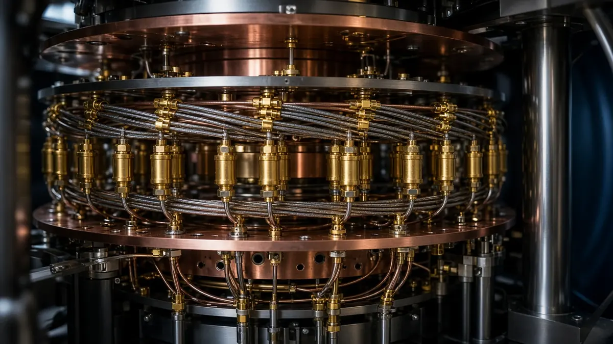

Google shows magic state cultivation on Willow, cutting errors about 40x
Short answer: Google Quantum AI said on 15 October 2026 that it has demonstrated "magic state cultivation" on its Willow processor, reducing errors about 40 times compared with uncultivated states and producing T-states with a logical fidelity of 99.99%, which it calls a record. The work was published in Science the same day, according to Google.
Magic states are special quantum states needed to run the full set of operations that make a quantum computer universal. Google says producing high-quality, error-corrected magic states is so costly that some estimates put up to 95% of a machine's capacity into making them, and each one can only be used once.

Cultivation, developed in a 2024 theory paper by Google researchers Craig Gidney, Noah Shutty and Cody Jones, works like a filter: a noisy state is injected into a small patch of the chip and checked with coordinated measurements, and flawed attempts are thrown away, according to Google's description.
Google says the team also had to invent a new benchmarking method after lab noise from equipment drift and temperature changes undermined its usual measurement technique. It also moved purified states from a distance-3 color code into a distance-5 surface code, showing the states can survive the transfer on its hardware.
Google says cultivation still has to be shown at a larger scale and that plenty of technical challenges remain before it is practical.